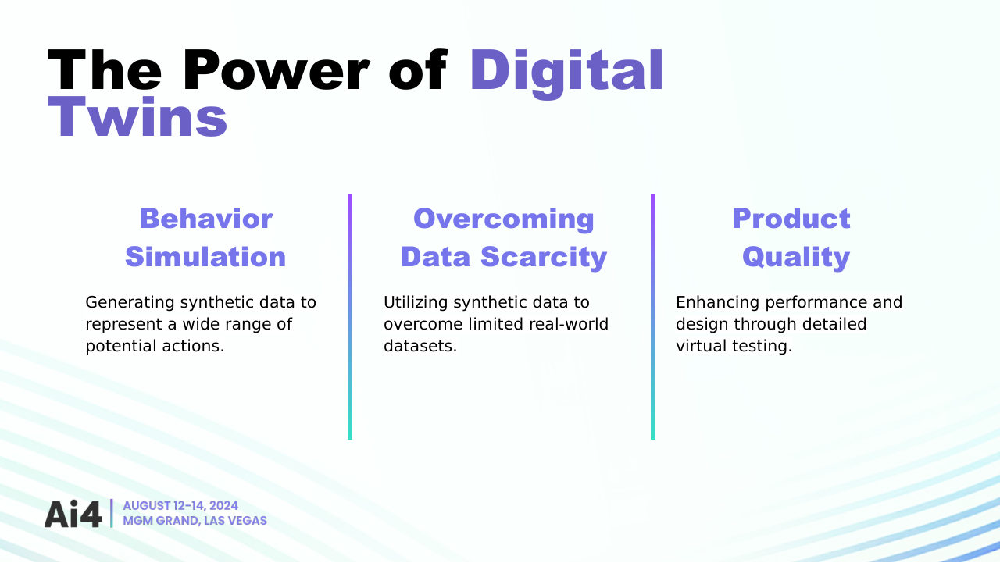
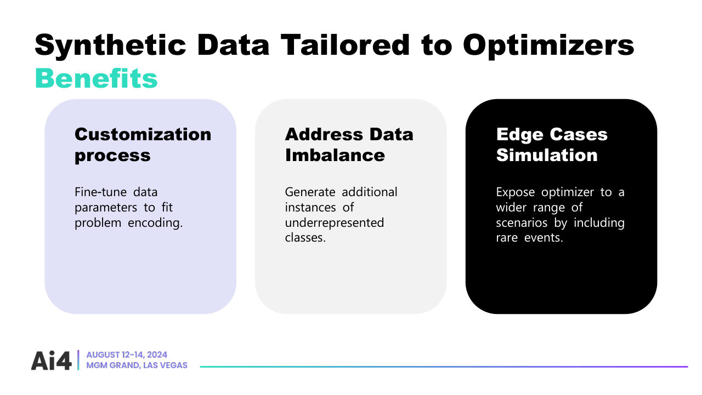

Method for controlling HVAC equipment of a building, computer system and computer program product thereof
- Inventors
- Maria Elisa Maciel Valente, Raúl Teixeira, Georgios Karafotias, Márcia Pereira
- Applicant
- Bandora Systems SA
The idea
A new building comes with almost no useful history. Its equipment has only ever run one way, so there is nothing to learn the effect of other actions from. The method fills that gap with a digital twin. It simulates the building across a wide range of actions, combines that synthetic data with whatever was measured, and trains the energy and temperature forecasters on both. Those forecasters then drive the choice of operating settings.
Where it started
In 2022 I built a warm-up optimiser: XGBoost forecasts of zone temperature and HVAC consumption, searched with simulated annealing over the morning schedule, trading energy or cost under time-of-use tariffs against comfort. Simulated on a 15-zone medium office, it cut HVAC cost inside the warm-up window by 27 to 45%, which is 2.4 to 2.9% of the annual HVAC bill. In an earlier funded R&D project, validated in EnergyPlus, the warm-up saving was 12.5%.
Synthetic first, real data next
On the first pilot restaurant, 24 zone-level models were trained on synthetic stress-test data to get past the cold start. They were then retrained every month on real data, with drift tracked fold by fold.
Talks
I presented the approach as "Data Alchemy: The Power of Synthetic Solutions" at Ai4 2024 in Las Vegas and at AI Nest 2026 in Coimbra. The talk covers why generic data does not solve the cold start, what a twin can generate that history cannot, such as rare events and under-represented operating modes, and where it stops: the gap between the simulation and the real building.

